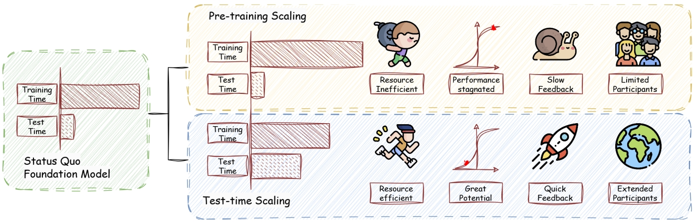
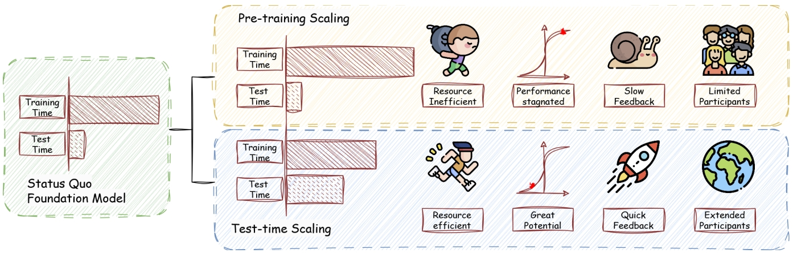
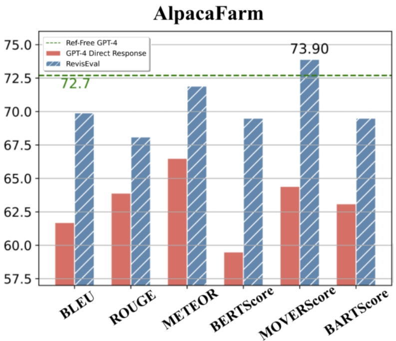
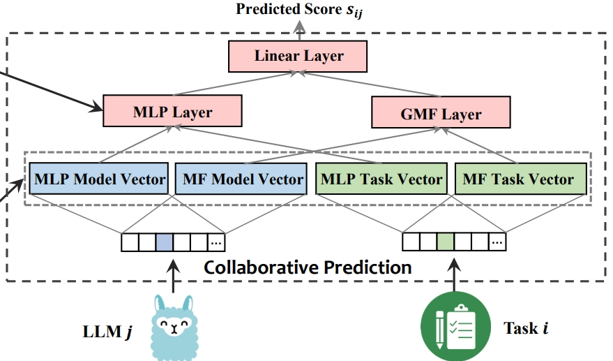
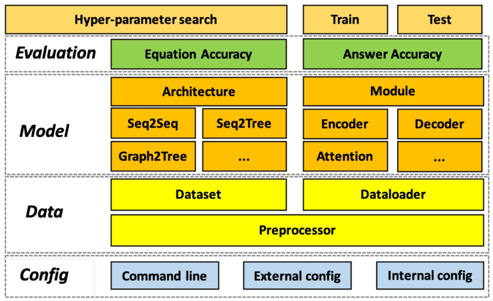

A Survey on Test-Time Scaling in Large Language Models
Qiyuan Zhang et al. · Preprint
Ph.D. Student · City University of Hong Kong
I am currently a third‑year Ph.D. student advised by Prof. Kede Ma and Prof. Chen Ma. Previously, I completed my B.Sc. and M.Sc. in Computer Science at the University of Electronic Science and Technology of China and spent time at Singapore Management University working with Jing Jiang. Soon, I will join Prof. Xue Liu’s group at MBZUAI as a visiting student.
My research interests lie in auto‑evaluation, reward modeling, and improved scaling strategies such as test‑time scaling for large language models. I am always open to collaborations—feel free to reach out!
Currently seeking visiting or research‑intern opportunities to further explore frontier research topics.

A Survey on Test-Time Scaling in Large Language Models
Qiyuan Zhang et al. · Preprint

Crowd Comparative Reasoning: Unlocking Comprehensive Evaluations for LLM-as-a-Judge
Qiyuan Zhang et al. · Under Review (ACL 2025)

RevisEval: Improving LLM-as-a-Judge via Response-Adapted References
Qiyuan Zhang et al. · ICLR 2024

Collaborative Performance Prediction for Large Language Models
Qiyuan Zhang et al. · EMNLP 2024

NOAHQA: Numerical Reasoning with Interpretable Graph QA Dataset
Qiyuan Zhang et al. · EMNLP 2021 Findings

MWPToolkit: An Open-Source Framework for DL-Based Math Word Problem Solvers
Yihuai Lan, Lei Wang, Qiyuan Zhang et al. · AAAI 2021 Workshop